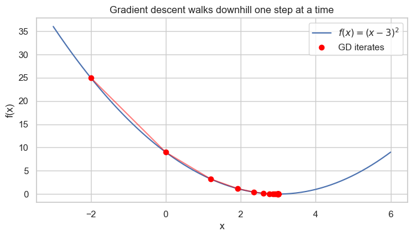
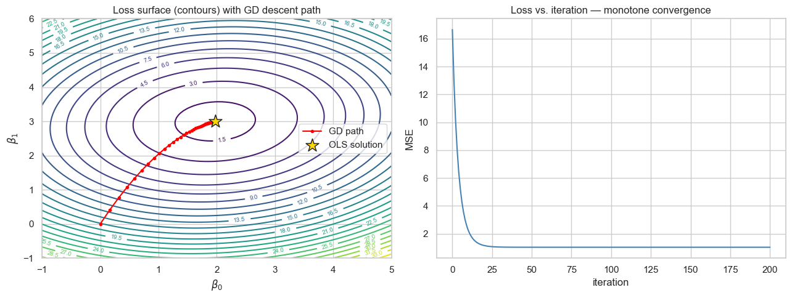
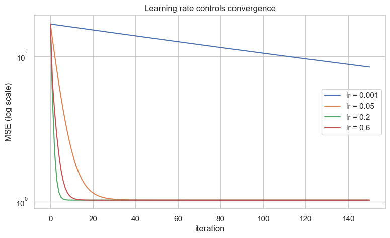
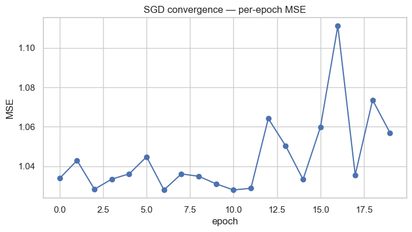
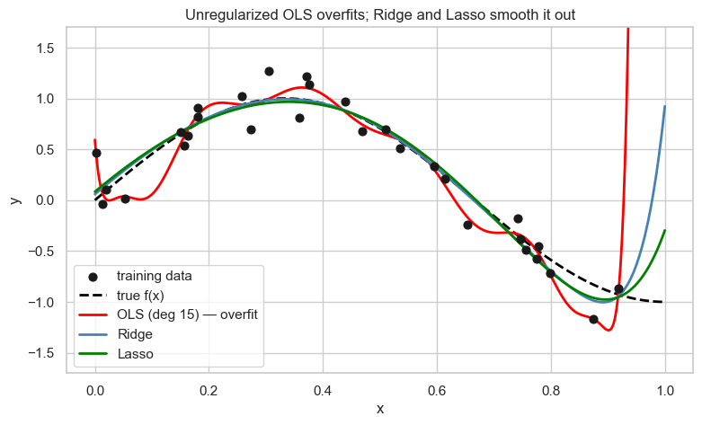
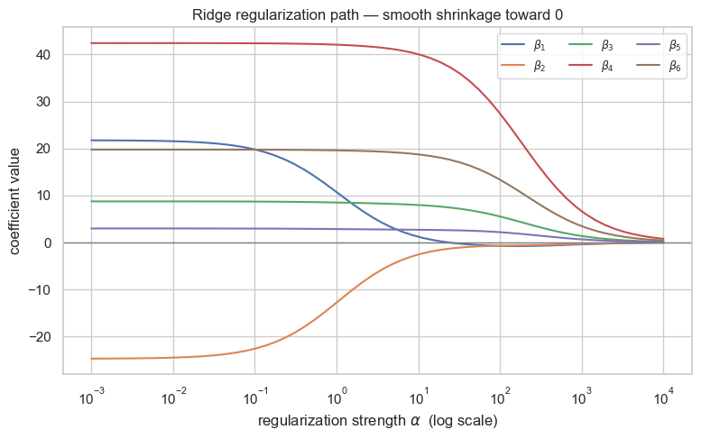
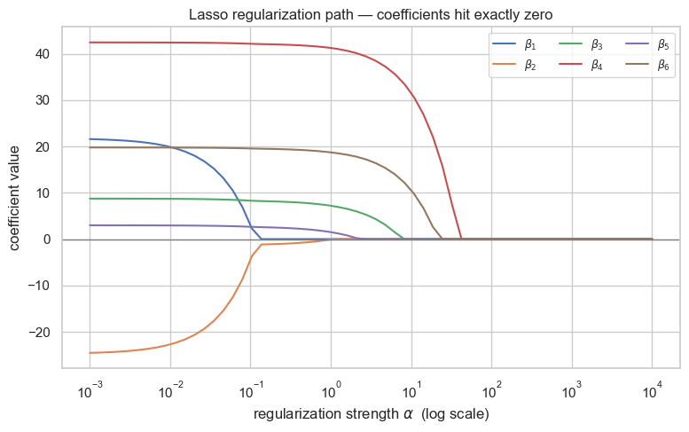

Parameter Estimation, Metrics & Regularization¶
Data 200 · Applied Statistical Analysis · Instructor: Aayush Regmi
In the Linear Regression notebook we used the closed-form OLS solution \(\hat{\boldsymbol\beta} = (X^\top X)^{-1} X^\top y\) to fit models. That formula is elegant, but it's not the only game in town — and it has real limitations when datasets get large or predictors get nasty.
This notebook rounds out the linear-regression toolkit with four more topics every applied statistician needs:
- Gradient Descent — an iterative alternative to OLS that scales to huge datasets and works with almost any loss function.
- Maximum Likelihood Estimation (MLE) — the probabilistic view of parameter estimation that unifies linear regression with logistic regression, Poisson regression, and the rest of the GLM family.
- Regression Metrics — how we actually measure whether a fitted model is any good: MAE, MSE, RMSE, \(R^2\), Adjusted \(R^2\), MAPE.
- Regularization — Ridge, Lasso, and Elastic Net — with visualizations that show why and how they tame overfitting.
Re-run each cell yourself. The plots are designed to be poked at — change a learning rate, a regularization strength, or a polynomial degree and watch the whole story shift.
Learning Objectives¶
By the end of this notebook you should be able to:
- Explain three concrete limitations of the closed-form OLS solution and describe how Gradient Descent addresses each one.
- Implement vanilla batch Gradient Descent for linear regression from scratch, and describe how Stochastic and Mini-batch variants differ.
- Diagnose a failing optimizer from its loss curve — distinguish "learning rate too small", "learning rate too large", and "converged".
- Write down the log-likelihood of a linear regression model under Gaussian noise and show that MLE ≡ OLS in that setting.
- Compute MAE, MSE, RMSE, \(R^2\), Adj-\(R^2\), MAPE on a real dataset and pick the right metric for a given business question.
- Explain what Ridge and Lasso do to the OLS objective, visualize the regularization path, and describe the geometric reason Lasso can zero coefficients out while Ridge cannot.
1. The Optimization View of Regression¶
Everything we do in this notebook sits inside one sentence:
Fitting a model = solving an optimization problem.
For linear regression that problem is
There are three standard ways to solve it:
| Method | How it works | When to use |
|---|---|---|
| Closed-form (OLS) | Set the gradient to zero and solve algebraically: \(\hat{\boldsymbol\beta} = (X^\top X)^{-1} X^\top y\) | Small to medium datasets, well-conditioned \(X\) |
| Iterative (Gradient Descent) | Walk downhill on \(L\) one small step at a time | Huge or streaming data, custom losses, non-invertible \(X^\top X\) |
| Probabilistic (MLE) | Write \(y\) as coming from a distribution and maximize its likelihood | GLMs, logistic regression, anything non-Gaussian |
All three give the same answer for vanilla linear regression with Gaussian noise — but they open very different doors.
2. Setup — Imports¶
import numpy as np
import pandas as pd
import matplotlib.pyplot as plt
import seaborn as sns
from sklearn.linear_model import (
LinearRegression, Ridge, Lasso, ElasticNet,
RidgeCV, LassoCV,
)
from sklearn.metrics import (
mean_absolute_error, mean_squared_error, r2_score,
mean_absolute_percentage_error,
)
from sklearn.preprocessing import PolynomialFeatures, StandardScaler
from sklearn.pipeline import make_pipeline
from sklearn.model_selection import train_test_split
import statsmodels.api as sm
from scipy import optimize, stats
sns.set_theme(style="whitegrid")
rng = np.random.default_rng(42)
3. Limitations of the Closed-Form OLS Solution¶
The formula \(\hat{\boldsymbol\beta} = (X^\top X)^{-1} X^\top y\) is beautiful but hides three practical problems:
3.1 Cost — matrix inversion is \(O(p^3)\)¶
Computing \((X^\top X)^{-1}\) costs on the order of \(p^3\) floating-point operations, where \(p\) is the number of predictors. For \(p = 10\) that's nothing; for \(p = 10{,}000\) it's ten trillion operations — and you need \(p^2 \approx 10^8\) floats just to store the matrix.
3.2 Memory and streaming — it all has to fit¶
OLS wants all the data at once so it can build \(X^\top X\) and \(X^\top y\). If your data arrives one row at a time (clickstreams, sensor feeds, recommender logs) you can't use it directly.
3.3 Fragility — \(X^\top X\) can be singular¶
If two predictors are (nearly) linear combinations of each other, \(X^\top X\) becomes singular or nearly so, and the inverse either doesn't exist or explodes numerically. Let's reproduce this.
# Build two nearly-identical columns
n = 200
x1 = rng.normal(size=n)
x2 = x1 + rng.normal(scale=1e-6, size=n) # nearly a copy
y = 3 * x1 - 2 * x2 + rng.normal(scale=0.5, size=n)
X_bad = np.column_stack([np.ones(n), x1, x2])
try:
beta_ols = np.linalg.inv(X_bad.T @ X_bad) @ X_bad.T @ y
print("OLS succeeded — coefficients:", beta_ols.round(2))
except np.linalg.LinAlgError as e:
print("OLS failed:", e)
cond = np.linalg.cond(X_bad.T @ X_bad)
print(f"\nCondition number of X\u1d40X : {cond:.2e}")
print("(anything above ~1e8 means the inverse is numerically unreliable)")
OLS succeeded — coefficients: [-4.000000e-02 -1.540712e+04 1.540809e+04]
Condition number of XᵀX : 3.02e+12
(anything above ~1e8 means the inverse is numerically unreliable)
The condition number is astronomical — the "solution" OLS returns for the two almost-identical columns is essentially random noise. Gradient Descent, as we'll see in Section 4, never computes this inverse so it is much more robust here.
4. Gradient Descent — The Workhorse of Modern ML¶
4.1 The core idea¶
Imagine you're standing on a hilly landscape \(L(\boldsymbol\beta)\) in the fog. You can't see the valley, but you can feel the slope under your feet. A sensible strategy is:
- Feel which way is downhill (compute the gradient).
- Take a small step in that direction.
- Repeat until the ground feels flat.
Formally, the update rule is
where \(\eta > 0\) is the learning rate. For the MSE loss
the gradient has a clean closed form:
4.2 A one-minute warm-up¶
Before tackling regression, let's minimize \(f(x) = (x - 3)^2\), which obviously has a minimum at \(x = 3\). The derivative is \(f'(x) = 2(x - 3)\) so the update rule is \(x \leftarrow x - \eta \cdot 2(x - 3)\).
def minimize_1d(x0=0.0, lr=0.1, n_iter=30):
xs = [x0]
x = x0
for _ in range(n_iter):
grad = 2 * (x - 3)
x = x - lr * grad
xs.append(x)
return np.array(xs)
traj = minimize_1d(x0=-2.0, lr=0.2, n_iter=25)
print(f"Started at x = {traj[0]:.3f}")
print(f"Ended at x = {traj[-1]:.4f} (target: 3.0000)")
xs = np.linspace(-3, 6, 200)
plt.figure(figsize=(8, 4))
plt.plot(xs, (xs - 3) ** 2, label=r"$f(x) = (x-3)^2$")
plt.scatter(traj, (traj - 3) ** 2, color='red', zorder=3,
label="GD iterates")
plt.plot(traj, (traj - 3) ** 2, color='red', alpha=0.5)
plt.xlabel("x"); plt.ylabel("f(x)")
plt.title("Gradient descent walks downhill one step at a time")
plt.legend(); plt.show()
Started at x = -2.000
Ended at x = 3.0000 (target: 3.0000)

4.3 Gradient descent for linear regression¶
Now let's use GD to fit a linear regression. We'll generate data from the model \(y = 2 + 3x + \varepsilon\), then see if GD can recover the true slope and intercept.
# Synthetic linear data
n = 200
x = rng.uniform(-2, 2, n)
y = 2 + 3 * x + rng.normal(scale=1.0, size=n)
X = np.column_stack([np.ones(n), x]) # [1, x] with intercept
def gradient_descent(X, y, lr=0.05, n_iter=200):
n, p = X.shape
beta = np.zeros(p)
history = [beta.copy()]
losses = [np.mean((X @ beta - y) ** 2)]
for _ in range(n_iter):
grad = (2 / n) * X.T @ (X @ beta - y)
beta = beta - lr * grad
history.append(beta.copy())
losses.append(np.mean((X @ beta - y) ** 2))
return beta, np.array(history), np.array(losses)
beta_gd, path, losses = gradient_descent(X, y, lr=0.05, n_iter=200)
beta_ols = np.linalg.inv(X.T @ X) @ X.T @ y
print(f"True parameters : [2.00, 3.00]")
print(f"OLS (closed form) : {beta_ols.round(3).tolist()}")
print(f"Gradient Descent : {beta_gd.round(3).tolist()}")
True parameters : [2.00, 3.00]
OLS (closed form) : [1.975, 2.999]
Gradient Descent : [1.975, 2.999]
4.4 Visualizing the loss surface and the descent path¶
Because the model has only two parameters \((\beta_0, \beta_1)\), we can plot the entire loss surface and overlay the sequence of GD iterates.
# Build a grid over (b0, b1) and evaluate the loss
b0_grid = np.linspace(-1, 5, 100)
b1_grid = np.linspace(-1, 6, 100)
B0, B1 = np.meshgrid(b0_grid, b1_grid)
L = np.zeros_like(B0)
for i in range(B0.shape[0]):
for j in range(B0.shape[1]):
beta = np.array([B0[i, j], B1[i, j]])
L[i, j] = np.mean((X @ beta - y) ** 2)
fig, ax = plt.subplots(1, 2, figsize=(13, 5))
# Contour plot with GD trajectory
cs = ax[0].contour(B0, B1, L, levels=25, cmap="viridis")
ax[0].clabel(cs, inline=True, fontsize=7)
ax[0].plot(path[:, 0], path[:, 1], "-o", color="red",
markersize=3, label="GD path")
ax[0].scatter(*beta_ols, marker="*", color="gold",
s=250, edgecolor="k", label="OLS solution", zorder=5)
ax[0].set(xlabel=r"$\beta_0$", ylabel=r"$\beta_1$",
title="Loss surface (contours) with GD descent path")
ax[0].legend()
# Loss curve
ax[1].plot(losses, color="steelblue")
ax[1].set(xlabel="iteration", ylabel="MSE",
title="Loss vs. iteration — monotone convergence")
plt.tight_layout()
plt.show()

4.5 The learning rate matters — a lot¶
Picking \(\eta\) is the whole game. Too small and you'll take forever; too large and the iterates diverge (bounce out of the bowl). Let's plot the loss curve for four different learning rates on the same data.
lrs = [0.001, 0.05, 0.2, 0.6]
plt.figure(figsize=(9, 5))
for lr in lrs:
_, _, lc = gradient_descent(X, y, lr=lr, n_iter=150)
label = f"lr = {lr}"
plt.plot(lc, label=label)
plt.yscale("log")
plt.xlabel("iteration")
plt.ylabel("MSE (log scale)")
plt.title("Learning rate controls convergence")
plt.legend()
plt.show()

Reading the plot
- \(\eta = 0.001\) — converges, but painfully slowly.
- \(\eta = 0.05\) — the sweet spot: smooth, fast descent.
- \(\eta = 0.2\) — still converges, now oscillating.
- \(\eta = 0.6\) — diverges: the loss shoots up and never recovers.
Rule of thumb: start small, and if the loss curve is still smooth after a few hundred iterations, try a larger \(\eta\). If it spikes, back off.
4.6 Batch, Stochastic, and Mini-batch GD¶
So far each step used all \(n\) samples to compute the gradient — this is Batch GD. For huge datasets that single step is expensive. Two popular relaxations:
| Variant | Samples per step | Trade-off |
|---|---|---|
| Batch GD | all \(n\) | Exact gradient, expensive per step, smooth convergence |
| Stochastic GD (SGD) | 1 random sample | Noisy but very cheap steps, can escape bad spots, needs smaller \(\eta\) |
| Mini-batch GD | small batch (e.g. 32) | The modern default — good gradient estimate, cheap, plays nicely with GPUs |
The noise in SGD actually helps in deep learning (it acts as a regularizer and helps escape saddle points). For convex problems like linear regression it merely complicates convergence a bit.
def sgd(X, y, lr=0.01, n_epochs=20):
n, p = X.shape
beta = np.zeros(p)
losses = []
for _ in range(n_epochs):
for i in rng.permutation(n):
xi = X[i]
grad = 2 * xi * (xi @ beta - y[i])
beta = beta - lr * grad
losses.append(np.mean((X @ beta - y) ** 2))
return beta, np.array(losses)
beta_sgd, loss_sgd = sgd(X, y, lr=0.01, n_epochs=20)
print(f"SGD final coefficients: {beta_sgd.round(3).tolist()}")
plt.figure(figsize=(8, 4))
plt.plot(loss_sgd, "-o")
plt.xlabel("epoch"); plt.ylabel("MSE")
plt.title("SGD convergence — per-epoch MSE")
plt.show()
SGD final coefficients: [1.801, 2.962]

5. How Gradient Descent Solves OLS's Limitations¶
Let's revisit the three pain points from Section 3:
| OLS limitation | Gradient Descent's answer |
|---|---|
| \(O(p^3)\) matrix inversion | Each GD iteration costs only \(O(np)\) — no inverse. A few hundred iterations beat one OLS solve for \(p > 10{,}000\). |
| Needs all data at once | SGD / mini-batch consume one sample at a time, perfect for streaming or out-of-memory datasets. |
| Blows up on singular \(X^\top X\) | GD never inverts anything. It will still wander across the flat direction caused by collinearity, but it won't crash — and a small regularizer (Section 8) fixes it completely. |
| Only MSE / L2 loss | Change the gradient, change the loss. GD happily minimizes Huber, quantile, logistic, hinge, or any custom differentiable loss. |
Let's verify point 3 — GD survives the near-singular data that wrecked OLS earlier.
# Reuse the near-collinear design matrix from Section 3
X_bad = np.column_stack([np.ones(n), x1, x2])
# Closed-form OLS produces exploding coefficients
beta_ols_bad, *_ = np.linalg.lstsq(X_bad, y, rcond=None)
# GD produces stable (if biased towards the null-space) estimates
def gd_generic(X, y, lr, n_iter):
beta = np.zeros(X.shape[1])
for _ in range(n_iter):
beta -= lr * (2 / len(y)) * X.T @ (X @ beta - y)
return beta
beta_gd_bad = gd_generic(X_bad, y, lr=0.05, n_iter=1000)
print(f"OLS (lstsq) coefs : {beta_ols_bad.round(2).tolist()}")
print(f"GD coefs : {beta_gd_bad.round(2).tolist()}")
print()
print("OLS splits the signal arbitrarily between x1 and x2 (huge swings);")
print("GD finds a stable, balanced answer without ever inverting XᵀX.")
OLS (lstsq) coefs : [1.66, 129740.17, -129740.01]
GD coefs : [1.65, 0.09, 0.09]
OLS splits the signal arbitrarily between x1 and x2 (huge swings);
GD finds a stable, balanced answer without ever inverting XᵀX.
6. Maximum Likelihood Estimation — The Probabilistic View¶
GD finds the parameter that minimizes a loss. Maximum Likelihood Estimation (MLE) finds the parameter that makes the observed data most probable under an assumed distribution. These two views turn out to be the same answer for linear regression — but the MLE framing is what unlocks logistic regression, Poisson regression, and the whole GLM family.
6.1 A one-parameter warm-up¶
Suppose we observe \(n\) iid samples from a Normal distribution with unknown mean \(\mu\) and known variance \(\sigma^2 = 1\). The likelihood of the data is the joint density,
Taking the log (a monotone transform — doesn't change the argmax),
Maximizing \(\log \mathcal{L}\) is the same as minimizing \(\sum_i (y_i - \mu)^2\) — and the minimum happens at \(\hat\mu = \bar y\).
# Simulate data from N(true_mu, 1)
true_mu = 4.2
sample = rng.normal(loc=true_mu, scale=1.0, size=80)
def log_likelihood(mu, data):
return np.sum(stats.norm.logpdf(data, loc=mu, scale=1.0))
mus = np.linspace(2, 6, 300)
log_liks = [log_likelihood(mu, sample) for mu in mus]
mle_mu = mus[np.argmax(log_liks)]
sample_mean = sample.mean()
plt.figure(figsize=(9, 5))
plt.plot(mus, log_liks, color="steelblue")
plt.axvline(mle_mu, color="red", ls="--",
label=f"MLE \u03bc = {mle_mu:.3f}")
plt.axvline(sample_mean, color="green", ls=":",
label=f"sample mean = {sample_mean:.3f}")
plt.axvline(true_mu, color="gray", ls="-",
label=f"true \u03bc = {true_mu}")
plt.xlabel(r"$\mu$"); plt.ylabel(r"$\log\mathcal{L}(\mu)$")
plt.title("Log-likelihood for the mean of a Normal")
plt.legend()
plt.show()
print(f"MLE \u2248 sample mean: {abs(mle_mu - sample_mean) < 0.02}")

MLE ≈ sample mean: True
6.2 Linear regression as MLE¶
For linear regression we assume
This is a probabilistic statement: \(y_i\) is a Normal random variable centered at \(\mathbf{x}_i^\top \boldsymbol\beta\). The log-likelihood is
Notice what happens when we try to maximize this over \(\boldsymbol\beta\): the only \(\boldsymbol\beta\)-dependent piece is \(-\tfrac{1}{2\sigma^2}\,\text{SSE}\). Maximizing that is the same as minimizing SSE — which is exactly OLS.
Conclusion: for linear regression under Gaussian noise, MLE = OLS = Gradient Descent to convergence. The three lenses all meet at the same point.
Let's verify this numerically by handing a generic MLE optimizer the log-likelihood and comparing with the closed-form OLS solution.
# Re-use the clean synthetic data from Section 4
n2 = 200
x2 = rng.uniform(-2, 2, n2)
y2 = 2 + 3 * x2 + rng.normal(scale=1.0, size=n2)
X2 = np.column_stack([np.ones(n2), x2])
def neg_log_likelihood(params, X, y):
beta0, beta1, log_sigma = params
sigma = np.exp(log_sigma) # exponentiate to keep sigma > 0
mu = beta0 + beta1 * X[:, 1]
return -np.sum(stats.norm.logpdf(y, loc=mu, scale=sigma))
result = optimize.minimize(
neg_log_likelihood,
x0=[0.0, 0.0, 0.0],
args=(X2, y2),
method="BFGS",
)
beta0_mle, beta1_mle, log_sigma_mle = result.x
sigma_mle = np.exp(log_sigma_mle)
beta_ols_clean = np.linalg.inv(X2.T @ X2) @ X2.T @ y2
print(f"OLS closed-form : {beta_ols_clean.round(4).tolist()}")
print(f"MLE (numerical) : [{beta0_mle:.4f}, {beta1_mle:.4f}]")
print(f"MLE \u03c3\u0302 : {sigma_mle:.4f} "
f"(true \u03c3 = 1.0)")
OLS closed-form : [2.1009, 3.0099]
MLE (numerical) : [2.1009, 3.0099]
MLE σ̂ : 1.0247 (true σ = 1.0)
The MLE estimate agrees with OLS to three decimal places. The extra parameter \(\hat\sigma\) is a bonus — MLE also hands us an estimate of the noise scale, which we need for confidence intervals and likelihood-ratio tests.
Why care about MLE if it just gives OLS? Because when you change the noise distribution, the answer changes:
- Gaussian noise → MLE = minimize SSE = linear regression.
- Laplace noise (heavy tails) → MLE = minimize sum of absolute errors = robust/quantile regression.
- Bernoulli outcome → MLE = logistic regression.
- Poisson outcome → MLE = Poisson regression.
MLE is the general recipe; OLS is the vanilla flavor.
7. Regression Metrics — How Good is "Good"?¶
Once a model is fitted, we need numbers to answer "how well does it predict?". No single metric is right for every problem — each one emphasizes a different kind of error.
| Metric | Formula | What it tells you |
|---|---|---|
| MAE (Mean Absolute Error) | \(\frac{1}{n}\sum \lvert y_i - \hat y_i\rvert\) | Average size of errors, same units as \(y\), robust to outliers |
| MSE (Mean Squared Error) | \(\frac{1}{n}\sum (y_i - \hat y_i)^2\) | Penalizes big errors quadratically, units are \(y^2\) |
| RMSE (Root MSE) | \(\sqrt{\text{MSE}}\) | Same emphasis as MSE but back in original units |
| \(R^2\) | \(1 - \dfrac{\text{SSE}}{\text{SST}}\) | Fraction of variance explained, dimensionless, can be negative for bad models |
| Adjusted \(R^2\) | \(1 - (1-R^2)\dfrac{n-1}{n-p-1}\) | Penalizes adding useless predictors, use when comparing models with different \(p\) |
| MAPE (Mean Absolute % Error) | \(\frac{100}{n}\sum \lvert\tfrac{y_i - \hat y_i}{y_i}\rvert\) | Error as a percentage — great for communicating, breaks when \(y_i = 0\) |
7.1 Computing all of them on the Advertising data¶
Let's fit three models of increasing complexity and compare.
# Load the Advertising dataset (same source as the Linear Regression notebook)
try:
data = pd.read_csv("../datasets/Advertising.csv", index_col=0)
except FileNotFoundError:
data = pd.read_csv("https://www.statlearning.com/s/Advertising.csv",
index_col=0)
X_full = data[["TV", "radio", "newspaper"]]
y_full = data["sales"]
X_train, X_test, y_train, y_test = train_test_split(
X_full, y_full, test_size=0.3, random_state=0
)
models = {
"TV only": LinearRegression().fit(X_train[["TV"]], y_train),
"TV + radio": LinearRegression().fit(X_train[["TV", "radio"]], y_train),
"TV+radio+news": LinearRegression().fit(X_train, y_train),
}
def evaluate(name, model, X_te, y_te):
y_pred = model.predict(X_te)
n = len(y_te)
p = X_te.shape[1]
mse = mean_squared_error(y_te, y_pred)
r2 = r2_score(y_te, y_pred)
return {
"model": name,
"p": p,
"MAE": mean_absolute_error(y_te, y_pred),
"MSE": mse,
"RMSE": np.sqrt(mse),
"R\u00b2": r2,
"Adj R\u00b2": 1 - (1 - r2) * (n - 1) / (n - p - 1),
"MAPE": mean_absolute_percentage_error(y_te, y_pred),
}
results = pd.DataFrame([
evaluate("TV only", models["TV only"], X_test[["TV"]], y_test),
evaluate("TV + radio", models["TV + radio"], X_test[["TV", "radio"]], y_test),
evaluate("TV+radio+news", models["TV+radio+news"], X_test, y_test),
]).set_index("model").round(4)
results
| p | MAE | MSE | RMSE | R² | Adj R² | MAPE | |
|---|---|---|---|---|---|---|---|
| model | |||||||
| TV only | 1 | 2.0575 | 7.4975 | 2.7382 | 0.7256 | 0.7209 | 0.2152 |
| TV + radio | 2 | 1.2255 | 3.6708 | 1.9159 | 0.8657 | 0.8609 | 0.2026 |
| TV+radio+news | 3 | 1.2334 | 3.6914 | 1.9213 | 0.8649 | 0.8577 | 0.2033 |
# Visualize the metrics side by side
fig, axes = plt.subplots(1, 3, figsize=(14, 4))
for ax, col in zip(axes, ["MAE", "RMSE", "R\u00b2"]):
results[col].plot.bar(ax=ax, color=["#e76f51", "#f4a261", "#2a9d8f"])
ax.set_title(col)
ax.set_xlabel("")
ax.tick_params(axis="x", rotation=15)
plt.tight_layout()
plt.show()

7.2 Which metric should I use?¶
| Situation | Preferred metric | Why |
|---|---|---|
| Outliers matter a lot | MAE | Quadratic penalties let a single outlier dominate MSE/RMSE |
| Big errors are much worse than small ones | MSE / RMSE | Squared penalty punishes large deviations |
| Reporting to non-technical stakeholders | MAPE | "13% error" is immediately interpretable |
| Comparing models with different \(p\) | Adjusted \(R^2\) | Penalizes useless extra features |
| You want units that match \(y\) | MAE or RMSE | Both live in the same units as the target |
| You care about relative explanatory power | \(R^2\) | Unitless fraction, 0–1 scale |
Warning about MAPE. If any true \(y_i\) is zero or near-zero, MAPE explodes. Use it only when \(y\) is strictly positive and bounded away from zero.
8. Regularization — Taming Overfitting and Multicollinearity¶
Linear regression with many features has two chronic illnesses:
- Overfitting — the model memorizes the training noise and generalizes poorly.
- Coefficient instability — correlated predictors cause huge, compensating swings in the fitted \(\hat\beta\) (we saw this already in Section 3).
Regularization is a single, elegant cure for both. The idea: add a penalty on the size of the coefficients to the loss function. The optimizer now faces a trade-off — fit the data well and keep coefficients small — which produces smoother, more stable models.
| Method | Penalty | Behavior |
|---|---|---|
| Ridge (L2) | \(\alpha \sum_j \beta_j^2\) | Shrinks all coefficients toward zero smoothly. Never zeros anything out. |
| Lasso (L1) | \(\alpha \sum_j \lvert\beta_j\rvert\) | Shrinks and sets some coefficients exactly to zero — gives automatic feature selection. |
| Elastic Net | mixture of L1 and L2 | Best of both — selection and stability when features are correlated. |
\(\alpha \ge 0\) is the regularization strength. \(\alpha = 0\) recovers plain OLS; \(\alpha \to \infty\) forces every coefficient to zero.
8.1 Why regularize — an overfitting demonstration¶
We'll generate 30 samples from a smooth underlying function \(y = \sin(1.5\pi x)\) with small noise, then try to fit a degree-15 polynomial by plain OLS. A high-degree polynomial has enough capacity to memorize every wiggle — and that's exactly the problem.
# Underlying truth: y = sin(1.5*pi*x)
def true_f(x):
return np.sin(1.5 * np.pi * x)
n_sam = 30
x_train = np.sort(rng.uniform(0, 1, n_sam))
y_train = true_f(x_train) + rng.normal(scale=0.15, size=n_sam)
x_grid = np.linspace(0, 1, 400)
degree = 15
pipe_ols = make_pipeline(PolynomialFeatures(degree), StandardScaler(),
LinearRegression())
pipe_ridge = make_pipeline(PolynomialFeatures(degree), StandardScaler(),
Ridge(alpha=0.01))
pipe_lasso = make_pipeline(PolynomialFeatures(degree), StandardScaler(),
Lasso(alpha=0.001, max_iter=20000))
pipe_ols.fit(x_train.reshape(-1, 1), y_train)
pipe_ridge.fit(x_train.reshape(-1, 1), y_train)
pipe_lasso.fit(x_train.reshape(-1, 1), y_train)
plt.figure(figsize=(9, 5))
plt.scatter(x_train, y_train, s=40, color="k", label="training data", zorder=3)
plt.plot(x_grid, true_f(x_grid), color="black", lw=2, ls="--", label="true f(x)")
plt.plot(x_grid, pipe_ols.predict(x_grid.reshape(-1,1)), color="red", lw=2, label="OLS (deg 15) — overfit")
plt.plot(x_grid, pipe_ridge.predict(x_grid.reshape(-1,1)), color="steelblue", lw=2, label="Ridge")
plt.plot(x_grid, pipe_lasso.predict(x_grid.reshape(-1,1)), color="green", lw=2, label="Lasso")
plt.ylim(-1.7, 1.7)
plt.xlabel("x"); plt.ylabel("y")
plt.title("Unregularized OLS overfits; Ridge and Lasso smooth it out")
plt.legend()
plt.show()
/Users/aayush/micromamba/envs/stats/lib/python3.10/site-packages/sklearn/utils/extmath.py:203: RuntimeWarning: divide by zero encountered in matmul
ret = a @ b
/Users/aayush/micromamba/envs/stats/lib/python3.10/site-packages/sklearn/utils/extmath.py:203: RuntimeWarning: overflow encountered in matmul
ret = a @ b
/Users/aayush/micromamba/envs/stats/lib/python3.10/site-packages/sklearn/utils/extmath.py:203: RuntimeWarning: invalid value encountered in matmul
ret = a @ b
/Users/aayush/micromamba/envs/stats/lib/python3.10/site-packages/sklearn/linear_model/_base.py:280: RuntimeWarning: divide by zero encountered in matmul
return X @ coef_ + self.intercept_
/Users/aayush/micromamba/envs/stats/lib/python3.10/site-packages/sklearn/linear_model/_base.py:280: RuntimeWarning: overflow encountered in matmul
return X @ coef_ + self.intercept_
/Users/aayush/micromamba/envs/stats/lib/python3.10/site-packages/sklearn/linear_model/_base.py:280: RuntimeWarning: invalid value encountered in matmul
return X @ coef_ + self.intercept_
/Users/aayush/micromamba/envs/stats/lib/python3.10/site-packages/sklearn/linear_model/_base.py:280: RuntimeWarning: divide by zero encountered in matmul
return X @ coef_ + self.intercept_
/Users/aayush/micromamba/envs/stats/lib/python3.10/site-packages/sklearn/linear_model/_base.py:280: RuntimeWarning: overflow encountered in matmul
return X @ coef_ + self.intercept_
/Users/aayush/micromamba/envs/stats/lib/python3.10/site-packages/sklearn/linear_model/_base.py:280: RuntimeWarning: invalid value encountered in matmul
return X @ coef_ + self.intercept_
/Users/aayush/micromamba/envs/stats/lib/python3.10/site-packages/sklearn/linear_model/_base.py:280: RuntimeWarning: divide by zero encountered in matmul
return X @ coef_ + self.intercept_
/Users/aayush/micromamba/envs/stats/lib/python3.10/site-packages/sklearn/linear_model/_base.py:280: RuntimeWarning: overflow encountered in matmul
return X @ coef_ + self.intercept_
/Users/aayush/micromamba/envs/stats/lib/python3.10/site-packages/sklearn/linear_model/_base.py:280: RuntimeWarning: invalid value encountered in matmul
return X @ coef_ + self.intercept_

Plain OLS contorts itself to pass through every noisy point — outside the training range it spirals off into nonsense. Ridge and Lasso give far smoother curves that actually track the true \(\sin\) function. Let's quantify the difference:
# Generate a held-out test set drawn from the same truth
x_test = np.sort(rng.uniform(0, 1, 200))
y_test = true_f(x_test) + rng.normal(scale=0.15, size=x_test.size)
for name, model in [("OLS ", pipe_ols),
("Ridge ", pipe_ridge),
("Lasso ", pipe_lasso)]:
y_hat = model.predict(x_test.reshape(-1, 1))
mse = mean_squared_error(y_test, y_hat)
print(f"{name} test MSE: {mse:.4f}")
OLS test MSE: 709.1673
Ridge test MSE: 0.1228
Lasso test MSE: 0.0409
/Users/aayush/micromamba/envs/stats/lib/python3.10/site-packages/sklearn/linear_model/_base.py:280: RuntimeWarning: divide by zero encountered in matmul
return X @ coef_ + self.intercept_
/Users/aayush/micromamba/envs/stats/lib/python3.10/site-packages/sklearn/linear_model/_base.py:280: RuntimeWarning: overflow encountered in matmul
return X @ coef_ + self.intercept_
/Users/aayush/micromamba/envs/stats/lib/python3.10/site-packages/sklearn/linear_model/_base.py:280: RuntimeWarning: invalid value encountered in matmul
return X @ coef_ + self.intercept_
/Users/aayush/micromamba/envs/stats/lib/python3.10/site-packages/sklearn/linear_model/_base.py:280: RuntimeWarning: divide by zero encountered in matmul
return X @ coef_ + self.intercept_
/Users/aayush/micromamba/envs/stats/lib/python3.10/site-packages/sklearn/linear_model/_base.py:280: RuntimeWarning: overflow encountered in matmul
return X @ coef_ + self.intercept_
/Users/aayush/micromamba/envs/stats/lib/python3.10/site-packages/sklearn/linear_model/_base.py:280: RuntimeWarning: invalid value encountered in matmul
return X @ coef_ + self.intercept_
/Users/aayush/micromamba/envs/stats/lib/python3.10/site-packages/sklearn/linear_model/_base.py:280: RuntimeWarning: divide by zero encountered in matmul
return X @ coef_ + self.intercept_
/Users/aayush/micromamba/envs/stats/lib/python3.10/site-packages/sklearn/linear_model/_base.py:280: RuntimeWarning: overflow encountered in matmul
return X @ coef_ + self.intercept_
/Users/aayush/micromamba/envs/stats/lib/python3.10/site-packages/sklearn/linear_model/_base.py:280: RuntimeWarning: invalid value encountered in matmul
return X @ coef_ + self.intercept_
8.2 Ridge regression — L2 penalty¶
Ridge minimizes
Closed-form solution: \(\hat{\boldsymbol\beta}_{\text{ridge}} = (X^\top X + \alpha I)^{-1} X^\top y\). The \(+\alpha I\) term guarantees invertibility even when \(X^\top X\) is singular — Ridge literally solves the OLS fragility problem.
Let's visualize the regularization path: how each coefficient changes as \(\alpha\) sweeps from tiny to huge.
# Build a moderately-correlated design matrix with 6 features
from sklearn.datasets import make_regression
X_reg, y_reg = make_regression(
n_samples=200, n_features=6, n_informative=4,
noise=8.0, random_state=0,
)
# Introduce correlation between two features
X_reg[:, 1] = X_reg[:, 0] * 0.9 + rng.normal(scale=0.1, size=200)
alphas = np.logspace(-3, 4, 60)
ridge_path = np.array([
Ridge(alpha=a).fit(X_reg, y_reg).coef_ for a in alphas
])
plt.figure(figsize=(9, 5))
for j in range(ridge_path.shape[1]):
plt.plot(alphas, ridge_path[:, j], label=f"$\\beta_{j+1}$")
plt.xscale("log")
plt.xlabel(r"regularization strength $\alpha$ (log scale)")
plt.ylabel("coefficient value")
plt.title("Ridge regularization path — smooth shrinkage toward 0")
plt.axhline(0, color="gray", lw=1)
plt.legend(ncol=3, fontsize=9)
plt.show()

As \(\alpha\) grows, every Ridge coefficient smoothly approaches zero — but none of them is ever exactly zero. Ridge shrinks; it does not select.
8.3 Lasso regression — L1 penalty¶
Lasso replaces the squared penalty with an absolute-value penalty:
There is no closed form (the penalty is not differentiable at zero), but specialized solvers like coordinate descent are fast. The important behavioral difference: Lasso can set coefficients exactly to zero, which is why it's used for automatic feature selection.
lasso_path = np.array([
Lasso(alpha=a, max_iter=20000).fit(X_reg, y_reg).coef_ for a in alphas
])
plt.figure(figsize=(9, 5))
for j in range(lasso_path.shape[1]):
plt.plot(alphas, lasso_path[:, j], label=f"$\\beta_{j+1}$")
plt.xscale("log")
plt.xlabel(r"regularization strength $\alpha$ (log scale)")
plt.ylabel("coefficient value")
plt.title("Lasso regularization path — coefficients hit exactly zero")
plt.axhline(0, color="gray", lw=1)
plt.legend(ncol=3, fontsize=9)
plt.show()

Compare the two paths: Lasso coefficients snap to zero one by one as \(\alpha\) grows, while Ridge coefficients stay away from zero but shrink together. At a large enough \(\alpha\) Lasso keeps only the "most important" features — that's the feature-selection property.
8.4 The geometric intuition — why L1 zeros things out¶
Here's the classic visualization (from ISLR). Fix two coefficients \(\beta_1, \beta_2\) and draw:
- Ellipses — contours of the OLS loss, centered at the OLS solution.
- Blue region — the L2 constraint \(\beta_1^2 + \beta_2^2 \le t\) (a circle).
- Red region — the L1 constraint \(\lvert\beta_1\rvert + \lvert\beta_2\rvert \le t\) (a diamond).
The constrained solution is where the smallest-possible loss ellipse just touches the constraint region. A diamond has corners lying on the axes — so the contact point tends to lie on an axis, meaning one coordinate is exactly zero. A circle has no corners, so the contact is almost never exactly on an axis.
# OLS solution for a toy 2-parameter problem
beta_star = np.array([2.5, 1.5])
# Build an elliptical loss surface centered on beta_star
grid = np.linspace(-3, 4, 400)
B1, B2 = np.meshgrid(grid, grid)
Q = np.array([[2.0, 0.8], [0.8, 1.0]]) # positive-definite Hessian
delta = np.stack([B1 - beta_star[0], B2 - beta_star[1]])
L = 0.5 * np.einsum("ij...,ik...->jk...", delta, delta) # unused; just for shape
# Recompute properly
L = 0.5 * (Q[0, 0] * (B1 - beta_star[0]) ** 2 +
2 * Q[0, 1] * (B1 - beta_star[0]) * (B2 - beta_star[1]) +
Q[1, 1] * (B2 - beta_star[1]) ** 2)
# Constraint radii (chosen to make a nice picture)
t = 1.2
fig, axes = plt.subplots(1, 2, figsize=(12, 5), sharey=True)
for ax, shape in zip(axes, ["ridge", "lasso"]):
cs = ax.contour(B1, B2, L, levels=12, cmap="Greys")
ax.scatter(*beta_star, color="black", s=80, zorder=5,
label=r"OLS $\hat\beta$")
if shape == "ridge":
theta = np.linspace(0, 2 * np.pi, 200)
ax.fill(t * np.cos(theta), t * np.sin(theta),
color="steelblue", alpha=0.4, label="L2 region")
# Constrained solution: gradient-descent-like projection
b = beta_star * t / np.linalg.norm(beta_star)
ax.set_title("Ridge — L2 ball (no corners → no zeros)")
else:
diamond = np.array([[t, 0], [0, t], [-t, 0], [0, -t], [t, 0]])
ax.fill(diamond[:, 0], diamond[:, 1],
color="salmon", alpha=0.5, label="L1 region")
# Constrained solution lands on the top corner because beta_star is
# above the x-axis — illustrative only
b = np.array([0.0, t])
ax.set_title("Lasso — L1 diamond (corners → exact zeros)")
ax.scatter(*b, color="red", s=100, zorder=5,
marker="X", label="constrained opt.")
ax.axhline(0, color="gray", lw=0.5)
ax.axvline(0, color="gray", lw=0.5)
ax.set_xlabel(r"$\beta_1$")
ax.legend(loc="lower left", fontsize=9)
axes[0].set_ylabel(r"$\beta_2$")
plt.tight_layout()
plt.show()

8.5 Elastic Net — the best of both¶
Elastic Net combines the two penalties:
with \(\rho \in [0,1]\) controlling the mix. Elastic Net is the right choice when you have groups of correlated features — Lasso alone would pick one arbitrarily and drop the rest, while Elastic Net tends to keep the whole group with shrunk coefficients.
# Quick head-to-head on the same synthetic dataset
alpha = 1.0
fit_ols = LinearRegression().fit(X_reg, y_reg)
fit_ridge = Ridge(alpha=alpha).fit(X_reg, y_reg)
fit_lasso = Lasso(alpha=alpha, max_iter=20000).fit(X_reg, y_reg)
fit_enet = ElasticNet(alpha=alpha, l1_ratio=0.5, max_iter=20000).fit(X_reg, y_reg)
comp = pd.DataFrame({
"OLS": fit_ols.coef_,
"Ridge": fit_ridge.coef_,
"Lasso": fit_lasso.coef_,
"Elastic Net": fit_enet.coef_,
}, index=[f"feat {i+1}" for i in range(X_reg.shape[1])]).round(3)
comp
| OLS | Ridge | Lasso | Elastic Net | |
|---|---|---|---|---|
| feat 1 | 21.757 | 10.711 | -0.000 | -0.566 |
| feat 2 | -24.757 | -12.802 | -0.068 | -0.428 |
| feat 3 | 8.736 | 8.495 | 7.191 | 5.152 |
| feat 4 | 42.435 | 42.094 | 41.243 | 27.100 |
| feat 5 | 2.972 | 2.844 | 1.496 | 1.797 |
| feat 6 | 19.768 | 19.597 | 18.702 | 13.035 |
8.6 Choosing \(\alpha\) — cross-validation¶
\(\alpha\) is a hyperparameter — not learned from the training data directly. The standard recipe is k-fold cross-validation: for each candidate \(\alpha\), train on \(k-1\) folds and score on the held-out fold; pick the \(\alpha\) with the best average score.
sklearn ships convenience classes RidgeCV / LassoCV that do this
automatically.
alphas_cv = np.logspace(-3, 3, 80)
ridge_cv = RidgeCV(alphas=alphas_cv, cv=5).fit(X_reg, y_reg)
lasso_cv = LassoCV(alphas=alphas_cv, cv=5, max_iter=20000).fit(X_reg, y_reg)
print(f"Ridge CV best alpha : {ridge_cv.alpha_:.4f}")
print(f"Lasso CV best alpha : {lasso_cv.alpha_:.4f}")
print(f"Ridge CV R\u00b2 : {ridge_cv.score(X_reg, y_reg):.4f}")
print(f"Lasso CV R\u00b2 : {lasso_cv.score(X_reg, y_reg):.4f}")
Ridge CV best alpha : 0.7693
Lasso CV best alpha : 0.9163
Ridge CV R² : 0.6360
Lasso CV R² : 0.6333
/Users/aayush/micromamba/envs/stats/lib/python3.10/site-packages/sklearn/linear_model/_base.py:280: RuntimeWarning: divide by zero encountered in matmul
return X @ coef_ + self.intercept_
/Users/aayush/micromamba/envs/stats/lib/python3.10/site-packages/sklearn/linear_model/_base.py:280: RuntimeWarning: overflow encountered in matmul
return X @ coef_ + self.intercept_
/Users/aayush/micromamba/envs/stats/lib/python3.10/site-packages/sklearn/linear_model/_base.py:280: RuntimeWarning: invalid value encountered in matmul
return X @ coef_ + self.intercept_
/Users/aayush/micromamba/envs/stats/lib/python3.10/site-packages/sklearn/linear_model/_base.py:280: RuntimeWarning: divide by zero encountered in matmul
return X @ coef_ + self.intercept_
/Users/aayush/micromamba/envs/stats/lib/python3.10/site-packages/sklearn/linear_model/_base.py:280: RuntimeWarning: overflow encountered in matmul
return X @ coef_ + self.intercept_
/Users/aayush/micromamba/envs/stats/lib/python3.10/site-packages/sklearn/linear_model/_base.py:280: RuntimeWarning: invalid value encountered in matmul
return X @ coef_ + self.intercept_
9. Key Takeaways¶
- Fitting is optimization. All three paradigms — OLS, Gradient Descent, MLE — are solving the same optimization problem through different doors.
- Gradient Descent trades one expensive exact step for many cheap approximate steps. This is how you scale to huge datasets, streaming data, and non-OLS losses.
- The learning rate is the single most important GD hyperparameter. Too small = slow; too large = diverge. Always monitor the loss curve.
- MLE = OLS under Gaussian noise, but MLE is the general recipe — change the noise distribution and you get logistic regression, Poisson regression, and the rest of the GLM family.
- No single regression metric rules. Pick MAE for outlier robustness, RMSE to punish big misses, Adjusted \(R^2\) when comparing models of different sizes, MAPE for stakeholder-friendly reports.
- Regularization is non-negotiable for high-dimensional data. Ridge smooths and stabilizes; Lasso does feature selection; Elastic Net does both. Always cross-validate \(\alpha\).
10. Practice Exercises¶
- Learning-rate hunt. For the synthetic linear data in Section 4, sweep \(\eta \in \{10^{-4}, 10^{-3}, \ldots, 1\}\) and record the iteration at which the loss first drops below \(0.1\). Plot "iterations to convergence" vs \(\eta\) on a log-log axis.
- SGD vs batch. Run batch GD and SGD from the same starting point on the same data, record the loss after each epoch (full pass), and plot them on the same axes. Which converges faster in wall-clock terms? In number of iterations?
- Huber loss with GD. Implement gradient descent for Huber regression (quadratic for small residuals, linear for large ones). Compare its behavior with OLS when you inject five large outliers into the Advertising data.
- MLE for Poisson regression. Generate counts
\(y_i \sim \text{Poisson}(\exp(\beta_0 + \beta_1 x_i))\) and use
scipy.optimize.minimizeto recover \(\beta_0, \beta_1\) by maximizing the Poisson log-likelihood. Compare withstatsmodels.GLM(..., family=sm.families.Poisson()). - Outlier sensitivity of metrics. Take the Advertising test set and add a single huge outlier (\(y = 200\)). Recompute MAE, RMSE, \(R^2\), and MAPE. Which metric moves the most? Which is most stable?
- Regularization path on Advertising. Build polynomial features (degree 3) of the Advertising predictors, then plot Ridge and Lasso regularization paths side by side. Does Lasso drop any features entirely?
- Ridge vs Lasso via CV. Use
RidgeCVandLassoCVon a standardized Advertising dataset. Report the best \(\alpha\) and the test-set RMSE for each, and note which features (if any) Lasso zeros out. - From-scratch Ridge. Implement Ridge regression yourself using
\(\hat\beta = (X^\top X + \alpha I)^{-1} X^\top y\) and verify against
sklearn.linear_model.Ridgefor a handful of \(\alpha\) values.